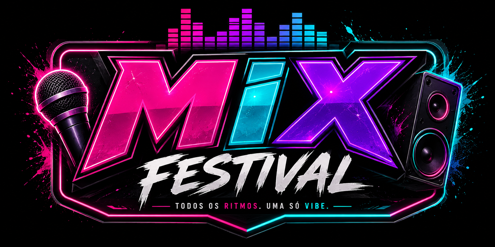

O Mix Festival nasceu de uma simples ideia: criar um espaço onde todos os estilos musicais pudessem se encontrar em um só lugar. Tudo começou com um pequeno grupo de amigos apaixonados por música e cultura brasileira, que acreditavam que não deveria existir divisão entre ritmos, públicos e gerações.
No início, o projeto enfrentou muitos desafios. A equipe precisou lidar com falta de apoio, dificuldades financeiras e até dúvidas sobre como unir tantos gêneros diferentes em um único festival. Mas a vontade de transformar o Mix Festival em realidade falou mais alto.
Com muito esforço, criatividade e dedicação, o festival começou a crescer. O que antes era apenas um sonho se transformou em um grande evento, reunindo pessoas de diferentes estilos para viver experiências únicas através da música.
Hoje, o Mix Festival representa diversidade, conexão e emoção. Do sertanejo ao funk, do rock ao brega, cada palco conta uma história e cada público faz parte dessa mistura que tornou o festival especial. Mais do que um evento musical, o Mix Festival se tornou um lugar onde diferentes ritmos se unem para criar momentos inesquecíveis.
Confira a seguir nossa programação oficial, através do link abaixo:
Programação OficialO festival irá ocorrer em Garanhuns - PE, (55290-000), na Arena 177, localizada em: Link localização
O horário dos shows começará das 21h às 03h
Adquira já seu ingresso, pelo o link abaixo:
IngressoEm caso de dúvidas, entre em contato com a gente, através do nosso número:
ContatoEm caso de dúvidas, entre em contato com a gente, através do nosso e-mail:
E-mail© 2026 Mix Festival - Todos os direitos reservados
Voltar ao início